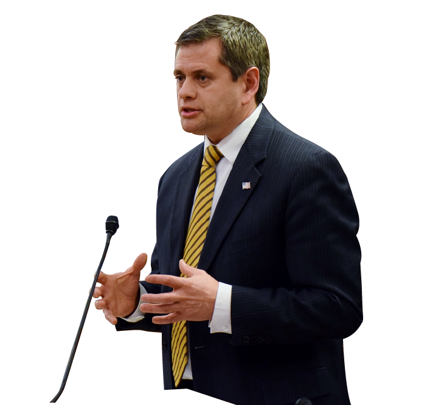

Today, more than 4300 IBEW members across the state will head to work representing our great union.
Linemen, wiremen, telephone, utility, hospital, and government workers, and all those we represent in between, will arrive to work with full faith and confidence that through this union, they are able to provide a better financial future for their families, that they are effectively represented and that together we are stronger.
They work trusting that their union is spending their money as wisely as they are, fighting for their representation as hard as they are working, and representing their interests as well as they represent their union.
This is why I joined the union and this is why I’m running for business manager.
I knew when I joined the IBEW over 30 years ago that I was putting my family’s best interests first, that as part of this union my voice would be stronger and my work ethic never taken advantage of.
Today, I’m running for business manager for your family and for our family. It is the family that is the core of society and also the core of our brotherhood, making this union integral to the foundation of society.
It was the IBEW where I better learned the power of teamwork, shared values, the power of negotiating and holding the line - many times the picket line.
It was these life lessons, these shared values and ideals, so exemplified in this union, that best equipped me as I became both minority and then majority leader in the Alaska House of Representatives.
Now it is time for me to dedicate my life give back to the union that taught me the ideals and skills that have shaped all facets of my career. Serving in leadership positions in the Alaska state legislature, I have had to negotiate with those solidly grounded in an opposing view. I have had to work on budgets and address a fiscal crisis laden with tough decisions and tougher cuts.
No doubt, this is a tough time in our state’s economy.
As your business manager, I will fight to keep our union fiscally streamlined. As our state sees job loss, I will fight to continually ensure that good paying union jobs remain.
Together, we will negotiate more robustly. Together, we will work smarter. Together, we are stronger.
I thank you for your hard work and dedication and I ask that you vote for me, Chris Tuck, for business manager of the IBEW.